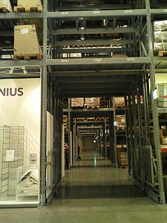
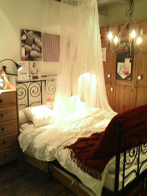
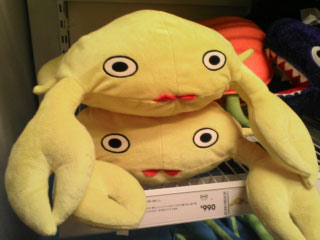
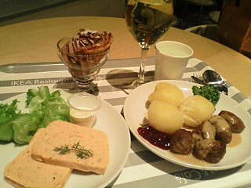
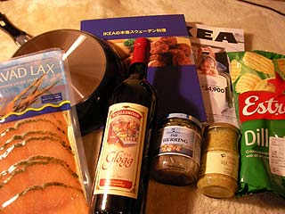

|
■2007/02/07/(Wed)21:29
ちょっと北欧へ
|

なんだかむしょうにIKEAに行きたくなって、仕事帰りに行ってみましたー。
←は一階部分の家具置き場。なんとなーくコストコっぽいけど、スタッフの感じのよさは雲泥の差。なんでコストコはあんなに融通利かないのかなぁ〜。

こんな感じで寸劇ができそーなインテリア例がごまんとありますよ。どれもこれもいいなぁ〜。ウチのベッドにも蚊帳を吊ってるのに、ぜんぜん違う…
ファブリック類が充実していて目移りしますわ。
驚きは800円ぐらいで布団カバーとマクラカバーのセットがあったとゆーこと。
しかも日本のスーパーに多いビミョーな花柄とかじゃないし！思った以上に楽しいですよ。
あー！家具欲しくなる〜！
カバー欲しい！食器欲しい（78円の白い食器とかが山積みだった…）！

買って帰ればよかったかなー。
カニ。
かわいい。次回あるかなー。次回は買おう…

500円ディナーでしたー。安い〜。（ワインは別）
会員だと780円のディナーセットが500円〜。あとサーモンが美味しそうだったー。
味？味はスカンジナビア航空の機内食っぽい感じでした。
ミートボールのソース＆クランベリージャムが美味しい。肉＆ジャムの組み合わせって嫌いじゃない私です。
サーモンパテは冷凍解凍のせいかちょっと水っぽかったけど。
あ、じゃがいも美味しかった。
デザートは外国のデザートって感じでしたわ。超甘ねっとりこってり。

で、本日買って帰ったもの。
フライパン＝350円。軽い。
サーモンマリネ＝695円。なぜか瓶入りのソースがオマケにつく
ホットワイン＝450円。スパイス入り
ポテトチップ＝195円。なんとなく思いつきで
ハーリング＝295円。オランダでもたべたニシンの塩漬け。5種類ほどあったけど、デイルにしてみた。
IKEAレシピブック＝495円。外国料理のレシピ本は絵本みたいで好き。
…と相変わらず食べ物ばかりですわ。（オランダの世界一まずいキャンディーも売ってた…ちょっと買おうか悩んだちなみに150円）
まーカタログもらってきたので、インテリアモノは次回とゆーことで。
|
|
|